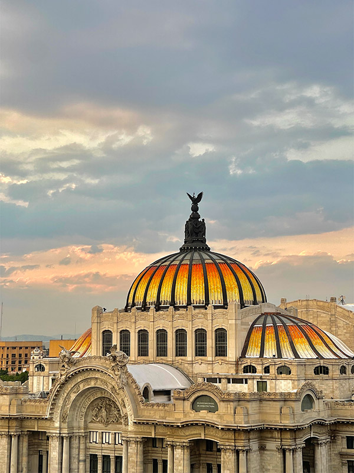

Historia
MUSEO DEL PALACIO DE BELLAS ARTES
Inaugurado el 29 de noviembre de 1934 bajo el nombre de Museo de Artes Plásticas, fue el primer museo de arte en México dedicado a exhibir objetos artísticos para su contemplación. En su acervo se incluían desde piezas del siglo XVI, hasta los murales realizados en 1934 por Diego Rivera y José Clemente Orozco, así como una sala de escultura mesoamericana, otra de estampa mexicana y un Museo de Arte Popular que albergaba la colección de Roberto Montenegro.
En 1947, aprovechando la creación del Instituto Nacional de Bellas Artes, el museógrafo y promotor cultural Fernando Gamboa y los pintores Julio Castellanos y Julio Prieto modificaron el proyecto y su nombre cambió a Museo Nacional de Artes Plásticas, el cual incorporó un nutrido programa educativo y un vasto plan de publicaciones que promovía la riqueza artística nacional.
A partir de 1968, las salas de exhibición del Palacio se conocen como Museo del Palacio de Bellas Artes. Su colección nutrió los acervos del nuevo sistema de museos en México compuesto por recintos como el Museo de Arte Moderno, la Pinacoteca Virreinal, el Museo Nacional de San Carlos y el Museo Nacional de Arte. A partir de entonces, el museo se ha encargado de constituir la principal plataforma de acción y espacio de exhibición de artistas nacionales e internacionales, a través de sus exposiciones temporales.
De la enorme colección que albergó durante la primera mitad de su historia, el Museo del Palacio de Bellas Artes actualmente exhibe de forma permanente diecisiete obras murales de siete artistas nacionales ejecutadas entre 1928 y 1963, mantiene un intenso programa de exposiciones temporales, cuenta con un sello editorial que difunde las investigaciones más relevantes en torno al arte nacional e internacional, y ofrece una gran cantidad de actividades para todo tipo de público.